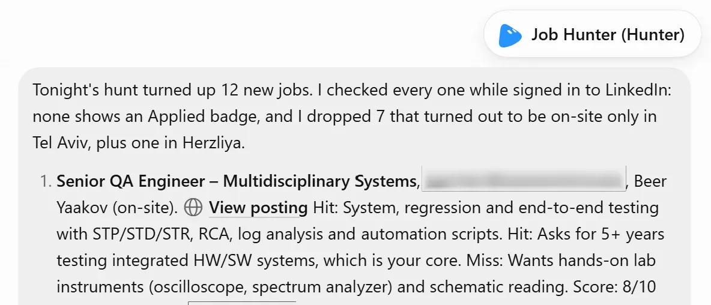
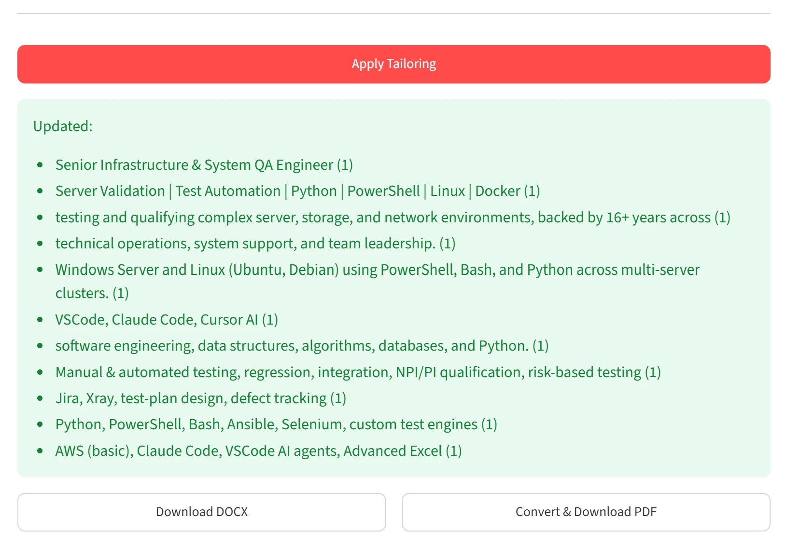
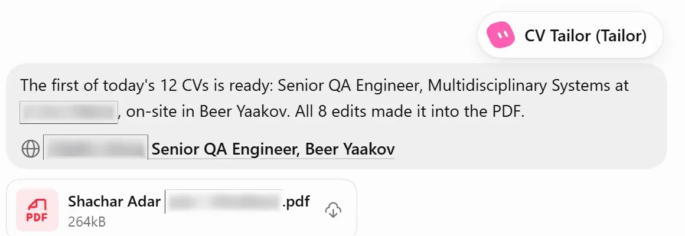
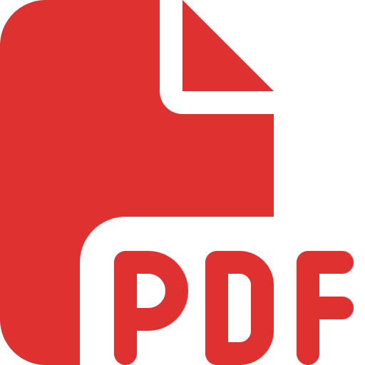

Automation case study
Automated
Job Search
View-only. Never applies.
From job discovery to an application-ready CV — automatically, with human judgment kept where it matters.
Automation pipelineRUNNING
LinkedInDiscover
→
 GrokJob HunterEvaluate
GrokJob HunterEvaluate→
CV TailorAdapt
→
StreamlitReview
✓
Job-specific CV readyHuman review before final output
8/102-pass searchLocation + role strategy
View-onlyNo automatic applications
The problem
Job hunting is repetitive.
For every opportunity, the same steps need to be repeated over and over. It takes time and it's easy to miss good opportunities.
- Find jobs
- →
- Read & evaluate
- →
- Adjust CV
- →
- Generate PDF
- →
- Apply
The solution
One workflow. Multiple automated stages.
A scheduled automation pipeline that finds, evaluates, tailors, and prepares application-ready CVs, with a final human review before applying.
GrokJob HunterFind, evaluate and rank jobs01 Job Hunter
Finds and evaluates the best opportunities.
A scheduled Grok Bot that searches LinkedIn using predefined parameters, evaluates each opportunity against my background, and produces a ranked list with clear reasoning.
- Two-pass search strategy (local + Israel-wide)
- Uses LinkedIn's Date posted filter (24h / 3 days)
- Filters by location, workplace type and keywords
- Evaluates each job against my CV and skills
- Provides explicit hits and misses with a score (1–10)
- Never applies, saves or makes account changes

Learn moreShow less
How it works
The Job Hunter runs on a schedule (via Task Scheduler) and uses Grok with a browser to search LinkedIn. It follows a two-pass strategy, uses LinkedIn's built-in date filter, filters by location and workplace type, and evaluates each job with a custom scoring method based on my background. It never applies, saves, messages, or changes any account settings.
Search strategy (high level)
- Pass 1: local opportunities (on-site + hybrid)
- Pass 2: Israel-wide (remote + hybrid, specific titles)
- Deduplicates by job ID
- Scores 1–10 with explicit reasoning
- Skips blocked companies and irrelevant roles
02 CV Tailor
Creates a job-specific version of my CV.
The CV Tailor analyzes the job description and identifies which parts of my existing experience should be emphasized for that specific role.
- Generates targeted Find → Replace pairs
- Highlights relevant tools, skills and experience
- Keeps the content truthful to my actual background
- No invented skills — just better presentation
Senior Infrastructure & System QA Engineer
Server Validation | Test Automation | Python | PowerShell | Linux | Docker
testing and qualifying complex server, storage, and network environments, backed by 16+ years across…
Windows Server and Linux (Ubuntu, Debian) using PowerShell, Bash, and Python across multi-server clusters.
VSCode, Claude Code, Cursor AI
Senior QA Engineer | Process Automation & Validation
Process Automation | Python | AI-Assisted Tools | Jira | Scripting
automating and validating system processes across server, storage, and network environments, backed by 16+ years across…
Linux (Ubuntu, Debian) and Windows Server using Python, Bash, and PowerShell.
Claude Code, Cursor AI, VSCode
Learn moreShow less
How it works
The CV Tailor (separate Grok project) analyzes the job description, compares it to my Master CV and generates targeted Find → Replace pairs. It identifies which parts of my existing experience should be emphasized, highlights relevant skills and tools, and keeps the content truthful to my actual background — no invented skills.
Input and output
- Input: job posting + my Master CV
- Output: targeted Find → Replace pairs
- Focus: relevant skills, tools and experience
- Designed to work with the Streamlit app
03 Streamlit app
Review, apply changes and generate the PDF.
A simple Streamlit application that loads the Find → Replace pairs, lets me review and edit them, applies the changes to my master CV, and generates a job-specific PDF (and DOCX).
- Loads Find → Replace pairs from CV Tailor
- Editable table before applying
- Generates a new CV from my master template
- Export to PDF (and DOCX)

Learn moreShow less
Human checkpoint
Suggested edits land in a table. I can change or drop a row before anything is written into the CV. Nothing is applied until I click apply.
What comes out
- Updated CV as DOCX
- The same CV as PDF
- One file per job, from the master template
04 Final output
Application-ready package for each opportunity.
For every relevant job, the bot delivers the job details along with the tailored CV. I review the job, download the PDF, and apply manually if it's a good fit.
- Job posting link
- Tailored CV (PDF)
- Clear summary and reasoning
- Multiple CVs generated in one run

Technologies
- Python
- Streamlit
- Grok
- Grok Bot
 LinkedIn
LinkedIn- PowerShell

PDF
Key takeaways
- Scheduled pipeline, human checkpoint before the CV
- Real job evaluation with clear reasoning
- Job-specific CVs with targeted changes
- No invented skills — just better presentation
- Saves time and helps focus on the right opportunities